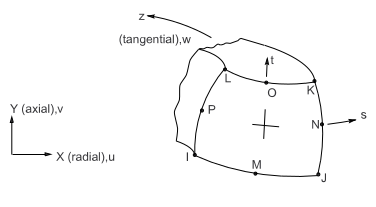

| Matrix or Vector | Geometry | Shape Functions | Integration Points |
|---|---|---|---|
| Stiffness, Mass, and Stress Stiffness Matrices; and Thermal Load Vector | Quad | Equation 11–168, Equation 11–169, and Equation 11–170 | 2 x 2 |
| Triangle | Equation 11–157, Equation 11–158, and Equation 11–159 | 3 | |
| Pressure Load Vector | Same as stiffness matrix, specialized to the face | 2 | |
| Load Type | Distribution |
|---|---|
| Element Temperature | Same as shape functions across element, harmonic around circumference |
| Nodal Temperature | Same as element temperature distribution |
| Pressure | Linear along each face, harmonic around circumference |
Reference: Zienkiewicz([39])
Structures describes the derivation of structural element matrices and load vectors as well as stress evaluations. PLANE25 - Axisymmetric-Harmonic 4-Node Structural Solid has a discussion of temperature applicable to this element.
A dropped midside node implies that the edge is and remains straight.
The material properties are assumed to be constant around the entire
circumference, regardless of temperature-dependent material properties or
loading. For
 (input as MODE on MODE
command) > 0, extreme values for combined stresses are obtained by computing
these stresses at every 10/
(input as MODE on MODE
command) > 0, extreme values for combined stresses are obtained by computing
these stresses at every 10/
 degrees and
selecting the extreme values.
degrees and
selecting the extreme values.